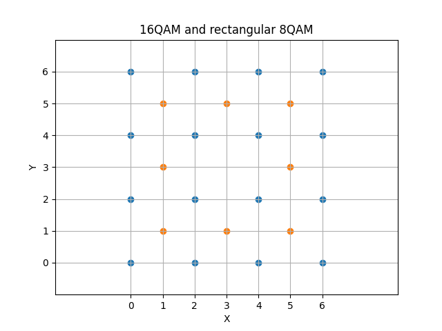
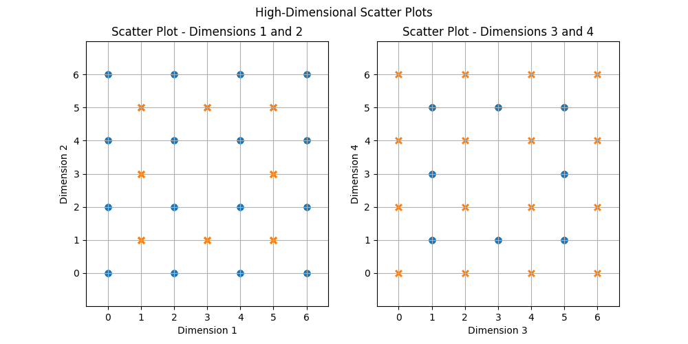
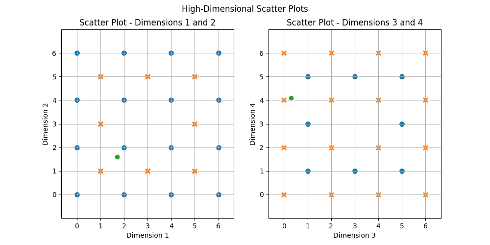
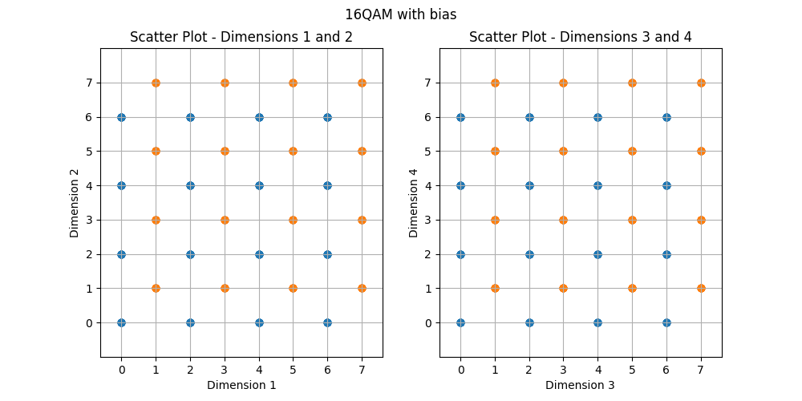
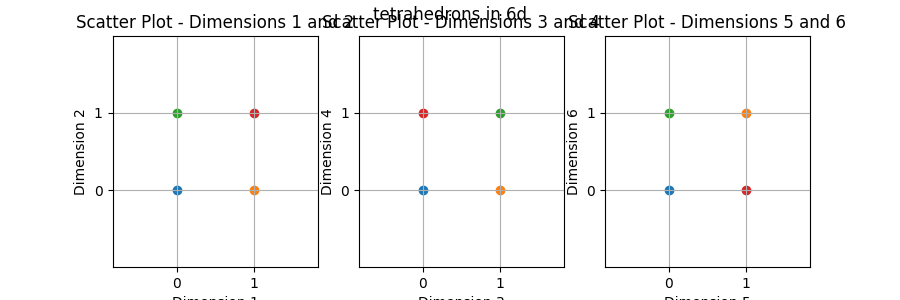
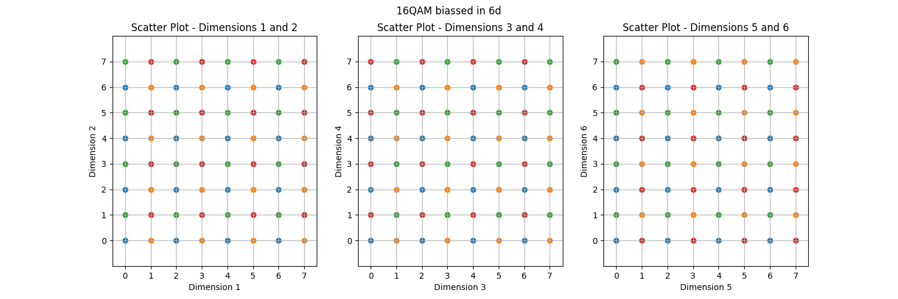

Tadhg's thesis work
Consider a 16QAM and a rectangular 8QAM constellation. In this document all constellations will be represented with strictly non-negative coordinates so that distance vectors have + and - while coordinate points are always written without the sign. So the constellations in question would look like this:

Both of these constellations exist in 2 spatial dimensions and transmit 4 or 3 bits respectively. If we composed a system where we alternate between using the constellations we might expect to get a net throughput of 7 bits every 4 spatial dimensions.
However, if for every pair of 16QAM and 8QAM points we allow a choice of whether to send the 16QAM first or the 8QAM point first we can extract an 8th bit from this scheme. In this way we can represent the valid codewords in this new hybrid constellation as first picking O (blue) or X (red), then picking any point of that colour on the first graph then picking any point of the same colour on the second graph.

This has the same throughput as the original 16QAM constellation but requires less power to transmit. I will also show that the minimum symbol distance is also still 2 even though it may not seem obvious at first glance.
Imagine we transmit the symbol [1,1,0,4], that is the codeword with x=1,y=1 on the left graph and x=0,y=4 on the right graph. If we experience a noise vector of [+0.7, +0.6, +0.3, +0.1] which has a euclidean distance of about 0.975, we get the black dot as shown on the following graph:

Even though on the left graph the point is closer to the point at [2,2], you can only chose that if you also use a blue point on the right graph. the vector from the valid codeword [2,2,5,1] to the green point is [-0.3,-0.4,-0.7, -0.9] which has a length of about 1.245, further than the original point. Any pair of neighbouring codewords will either differ in a single dimension by +-2 and be equal in the other 3 dimensions, or in all 4 dimensions by +-1.
In the previous example we are selecting between 2 different constellation schemes that have a different number of bits, this produces some issues regarding encoding and as we increase to higher dimensions we may wish to not use the exact same number of both mappings. The core reason the hybrid map worked is that both maps use orthogonal grids where each point is spaced out 2 units in some dimension and then the mappings were offset by a vector of [+1,+1,+1,+1] relative to each other. We can use this property to produce a different mapping where we encode 2 16QAM symbols then based on a 9th bit we possibly offset the whole mapping by [1,1,1,1]. This would produce the following constellation where we interpret the graphs similarly, to choose a codeword first pick whether you want a blue O or a red X, then select any point on the left graph of chosen colour, and any point on the right graph of the chosen colour.

This would transmit 9 bits per 4 dimensions having slightly higher throughput compared to 16QAM on its own but also requires more energy. I won't analyse this structure specifically in depth but this is the first step to expanding to higher dimensions.
As long as the received vector is within the convex hull of the constellation it is trivial to determine which 'box' (region seperated by grid lines) the received vector is in as it is solely determined by the integer part of the vector coordinates, then we could enumerate all the valid codewords that touch that box which in the 4D case would be a red codeword and a blue codeword and then check which of those viable codewords are closer. Better decoder designs may exist but this is the approach used in my research. When a vector is outside the convex hull of the constellation currently I am brute-force checking all points in the constellation as I haven't analysed more efficient techniques yet.
In 4D we essentially had one bias vector that we could optionally add to an existing QAM point to get a new codeword, in 6D we can have 4 bias options to get a second bit:
These are generated using logic explained below and then the elements are shuffled such that all three 2D slices hit each possible value of [(0,0), (0,1), (1,0), (1,1)] so that we can easily visualize them in the same manner as the previous constellation designs:

This could be used as a constellation of its own, effectively transmitting 2 bits every 6 dimensions, but the advantage is that this can be layered on top of existing QAM constellations like the previous example. Where each point in the 6D extension of some QAM constellation is duplicated by each bias vector to generate valid codewords. If we plot the codewords for 16QAM it looks like this: 
The way to choose a codeword is the same as before, first pick a colour and then pick a point of that colour from each figure to generate one codeword. This gives us 4+4+4+2=14 bits per 6D (4 bits for each graph + 2 bits from which colour is chosen) You may notice this is looking a lot like 64QAM which suggests our constellation could be described as a block encoding applied to 64 QAM, however because of the geometric structure we can potentially implement better decoding than solely interpreting it as a block encoding to one higher modulation of QAM.
If we use 4QAM as our seed instead of 16QAM we get a smaller constellation which I can use for an example:
We could interpret this as a 16 QAM constellation with grey mapping so it contains 12 total bits, then using just the bits find a valid codeword that is the least number of bit flips. The mapping of the codewords to 8 bit sequences is not relevent for this analysis.
If our grey mapping maps the vector coordinates to bit sequences: 0->00, 1->01, 2->11, 3->10, then the all 1s message would correspond to the point (2,2,2,2,2,2) which is a valid codeword (the top right blue point)
Then suppose our noise vector is [0, +0.6, +0.1, +0.6, 0, +0.6] resulting in the purple point in the above figure. Decoding as 16QAM it will be very certain the byte sequence is 1110 1110 1110, this is not a valid codeword but the middle graph's X position (dimension 3) can vary to get 2 other valid codewords that are both green.
If the block decoder had enough information it could determine the second one is closer because the +0.1 in the 3rd dimension but both of these codewords are further away than the transmitted message:
(2,3 ,3 ,3 ,2,3) - (2,2.6,2.1,2.6,2,2.6) = (0,0.4,0.9,0.4,0,0.4) length is sqrt(3*0.4^2 + 0.9^2) = sqrt(1.29)
Where as the length of the noise vector to the original message is sqrt(3*0.6^2 + 0.1^2) = sqrt(1.09). This is true in general where the closest bitwise distance to a valid codeword may not be the euclidean distance to a valid codeword. The goal of this research is to analyse structures where we can quickly determine a relatively small set of viable codewords to check using euclidean distances.
For the rest of the document I wish to move away from the part where the bias vectors are applied to a QAM mapping. To accomplish this we will analyse the bias vectors in modulo 2 space, this is a valid approach since in general we are duplicating each bias vector by 2 units along each dimension in both direction in the general case when we layer it on top of a QAM constellation. I will also start using bit strings to represent the bias vectors as this is closer to the way it will eventually be implemented.
In 4d we have our first viable bias vector of 1111. in 6D we can get the 4 points:
(if we shuffle around the bits this gives the vectors used in the above example, I wish to lay them out like this moving forward)
the vector 111100 is the same as our original 4d case and if we XOR it with the vector 110011 we get the last vector. This means we can map our 2 bits for biassing to the vectors 111100 and 110011, xor the result and that gives us a valid final bias vector.
In 7D we can add another bias basis vector:
The only property we wish to preserve is that each basis vector differs from each other basis vector by at least 4 bits, this gives us 8 possible bias vectors which because each of the basis vectors vary by 4 bits from each other are guarenteed to also vary by 4 bits from each other. I know this could be proven but I'm not sure how to write it formally.
To have N points all equal distance away from each other we need N-1 dimensions. This corresponds to a pair of points in 1d, a triangle in 2d, a tetrahedron in 3d etc. I'm not sure how to prove it but I know if you have N dimensions you can have the vectors [1,0,0,0,0], [0,1,0,0,0], etc. where all coordinates are 0 except one is 1 and with N dimensions you get N points, I feel like you could then build a matrix out of the difference vectors and show it has rank N-1 which implies the shape with that many points could exist in N-1 dimensional space but I'm not sure how to formalize this yet.
Since our 3 basis vectors form 8 points in 7D space that are all equal distance from each other, using the logic shown in the side tangent this is the most connectivity we could expect. As we expand further we expect to put 16 points in less than 15 dimensions so moving any further will require not all the points we generate to be densely adjacent.
In 8D we have our 4th basis vector and it shows a repeating pattern into higher dimensions:
I do not have a proof that this is the optimal pattern given the constraint that each must be different by at least 4 elements from each other and we compare them in modulo 2 space but it does work. It also produces the first non densely connected bias vectors as 11110000 and 00001111 are disjoint.